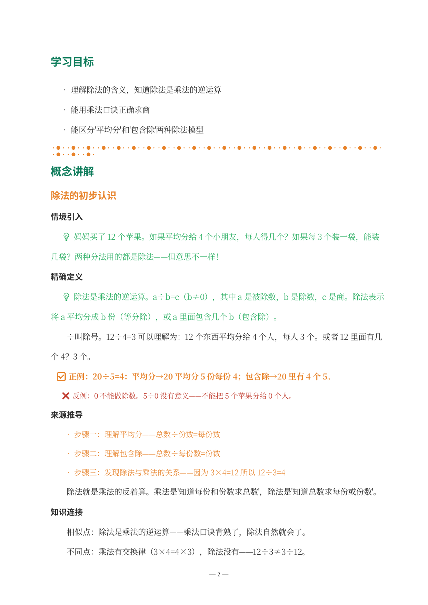
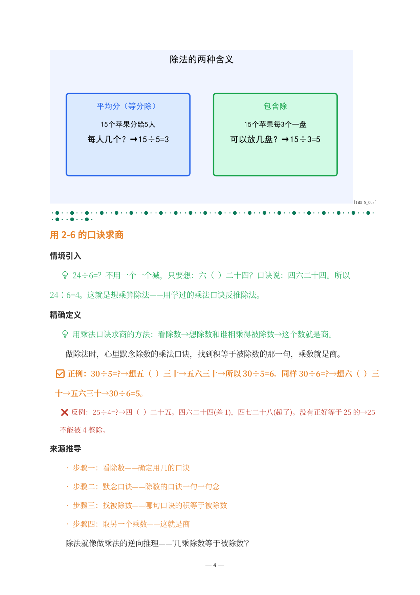
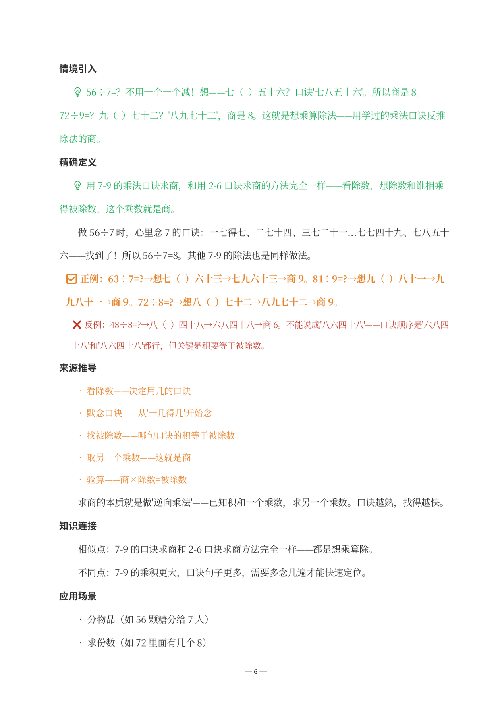
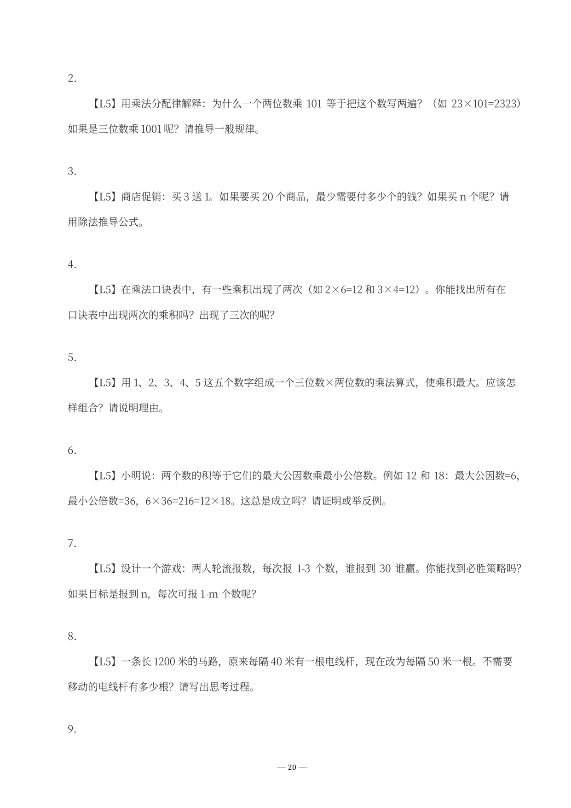

以下是《表内除法·学生版》DOCX 实际截图。除法是乘法的逆运算，也是 P2 最关键的思维跨越——孩子第一次接触"逆向思考"。所见即所得——您收到的文件排版、公式、题目与此完全一致。

↑ 学习目标与除法的初步认识——等分除与包含除两种模型

↑ 用2-6的口诀求商——想乘算除法，用学过的乘法口诀反推除法

↑ 用7-9的口诀求商——方法完全一致，口诀越熟求商越快

↑ L5 探究拓展——规律推导、公式归纳与斐波那契数列